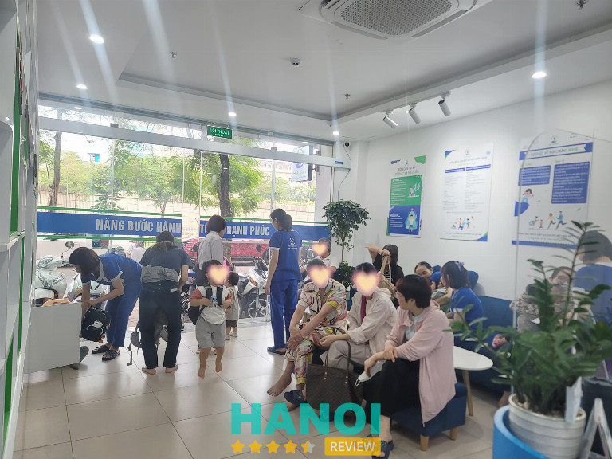
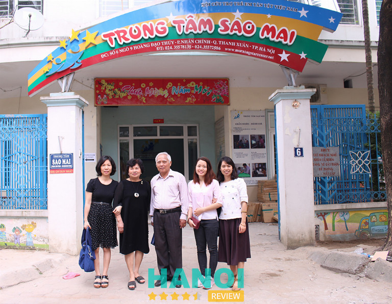
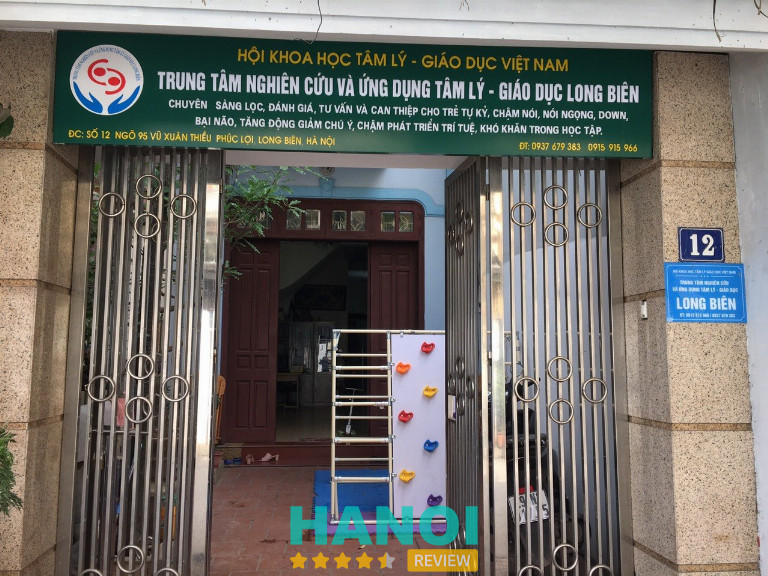
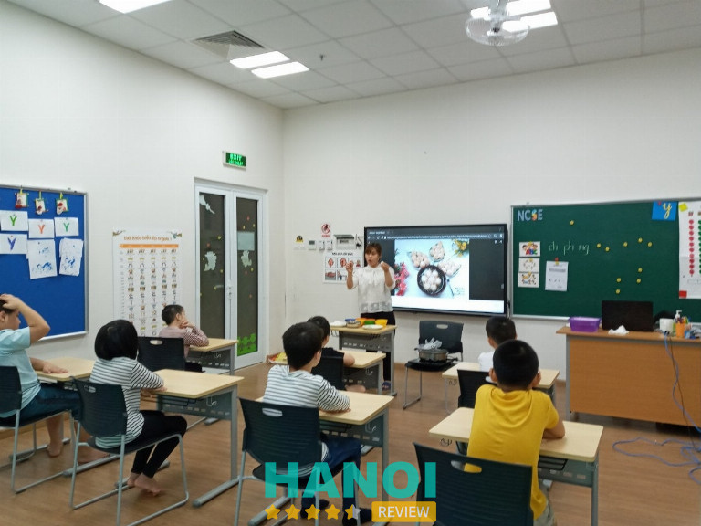
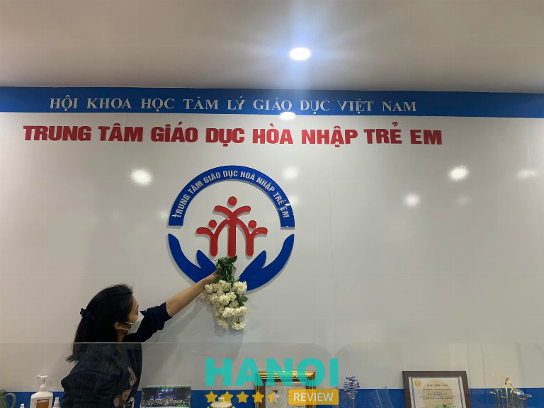
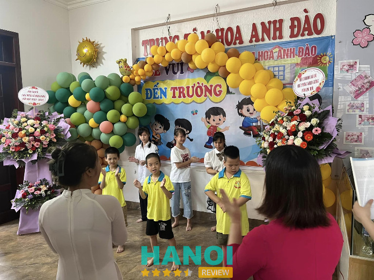
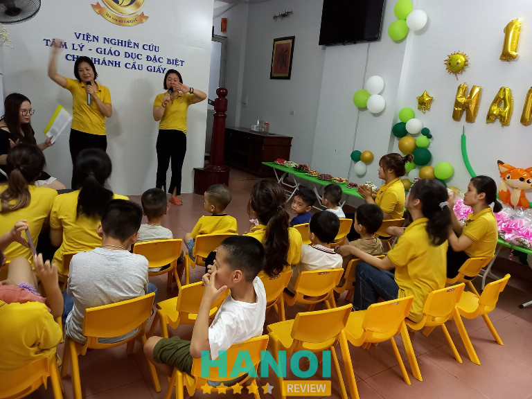
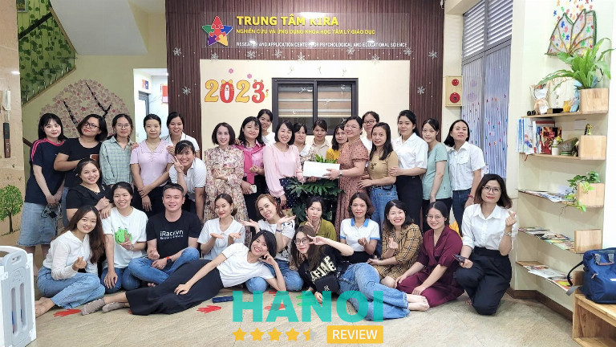
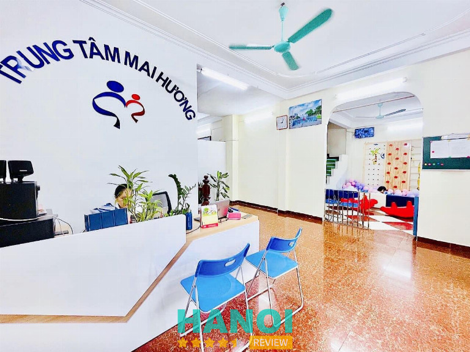
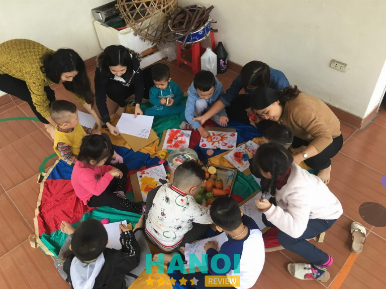

10 Trung tâm giáo dục đặc biệt tại Hà Nội tốt nhất
Trong nhà có trẻ em mắc chứng tự kỷ, chậm phát triển, tăng động,… và bạn đang tìm kiếm một trung tâm giáo dục đặc biệt tại Hà Nội để gắm gửi trẻ nhưng còn nhiều đắn đo chưa biết địa chỉ nào đủ uy tín thì có thể cân nhắc những cơ sở được nhắc dến trong bài viết này.
Top 10 Trung tâm giáo dục đặc biệt ở Hà Nội có chương trình dạy chất lượng
Các trung tâm giáo dục chuyên biệt ra đời mang theo sứ mệnh giúp những đứa trẻ đặc biệt nhanh chóng phục hồi chức năng tự nhiên, cải thiện về trí tuệ và thể chất. Tuy nhiên, với số lượng cơ sở giáo dục chuyên biệt tại Hà Nội hiện nay, rất khó để tìm ra một địa chỉ uy tín, có chương trình dạy tốt, giáo viên nhiệt tình.
HaNoiReview đã tổng hợp danh sách 10 trung tâm giáo dục đặc biệt đáng tin cậy, chất lượng cao tại Hà Nội. Hãy tham khảo và lưu lại một địa chỉ phù hợp nhất.
Trung tâm Tâm lý giáo dục chuyên biệt NHC Việt Nam
Trung tâm Tâm lý Giáo dục chuyên biệt NHC Việt Nam tự hào là cơ sở đạt chuẩn quốc tế trong lĩnh vực can thiệp, chăm sóc trẻ em đặc biệt tại Việt Nam. Được thành lập với mục tiêu giúp cho trẻ em tự kỷ, chậm phát triển phá bỏ giới hạn, sớm hòa nhập với cộng đồng và cuộc sống.
Các phương pháp can thiệp tại đây đều đạt chứng nhận về khoa học, đảm bảo đem lại hiệu quả cao nhất cho trẻ. Hiện tại, trung tâm đang áp dụng các phương pháp trị liệu bằng ngôn ngữ, tâm lý, âm nhạc, giáo cụ, khoa học vận động,…
Bên cạnh đó, còn đầu tư mạnh vào hệ thống cơ sở vật chất, hạ tầng hiện đại, tích hợp công nghệ cao, phòng học chức năng có trang bị đầy đủ dụng cụ, giáo cụ thiết yếu và đều đạt tiêu chuẩn quốc tế.
NHC Academy xây dựng liệu trình điều trị phù hợp với từng trẻ, với từng loại bệnh dựa trên chương trình can thiệp tiêu chuẩn. Chính các chuyên chuyên gia tâm lý, giáo viên chuyên môn, đầy kinh nghiệm, tận tâm và trách nhiệm trực tiếp nghiên cứu và tiến hành liệu trình chữa trị cho các bé.

Các chuyên gia tâm lý và giáo viên tại đây vận dụng liệu pháp khoa học vận động kết hợp với giáo dục tâm lý vào quá trình phục hồi chức năng ở trẻ tự kỷ, hay bại não. Cùng với quy trình quan sát và thăm khám mỗi ngày, sẽ kịp thời tư vấn cho cha mẹ về tình trạng bệnh của trẻ.
Về đội ngũ tư vấn viên tại cơ sở đều đã trải qua đào tạo bài bản, nắm vững kiến thức cơ bản về giáo dục đặc biệt, sẵn lòng giải đáp thắc mắc về dịch vụ, phương pháp giảng dạy cho phụ huynh, cam kết bảo mật thông tin học viên, và mang tới hiệu quả trong và sau can thiệp.
Trung tâm giáo dục chuyên biệt NHC luôn đặt trẻ em làm trọng tâm, luôn dẫn đầu trong việc sớm phát hiện và can thiệp vào quá trình chăm sóc trẻ đặc biệt. Nỗ lực hết mình tạo ra môi trường giáo dục chuyên nghiệp, phù hợp với trẻ em tăng động, tự kỷ,…
Giờ làm việc: 8h00 – 18h00, mở cửa từ thứ Hai đến Chủ Nhật.
Thông tin liên hệ:
- Địa chỉ: 235 Phố Quan Hoa, P. Dịch Vọng, Q. Cầu Giấy, TP. Hà Nội
- Điện thoại: 0906 818 123
- Email: giaoducnhc@gmail.com
- Website: giaoducnhc.vn
- Fanpage: FB.com/giaoducnhc
Trung tâm Sao Mai
Sao Mai là trung tâm nuôi dạy trẻ tự kỷ thuộc Hội Cứu Trợ Trẻ Em Tàn Tật Việt Nam, được thành lập bởi Bà Đỗ Thuý Lan – Thầy thuốc ưu tú, Bác sĩ chuyên khoa II tâm thần. Đây là tổ chức xã hội phi lợi nhuận, chuyên tư vấn, phát hiện, và can thiệp sớm, chăm nom trẻ em đặc biệt bằng phương pháp kết hợp chặt chẽ giữa giáo dục và y tế.
Chương trình can thiệp trẻ đặc biệt tại đây được nghiên cứu chuyên sâu bởi đội ngũ bác sĩ, giáo viên tâm huyết, giàu kinh nghiệm cùng với trình độ chuyên môn cao miệt mài nỗ lực, áp dụng phương pháp trị liệu mới để giúp các em được phục hồi tốt nhất.
Ngoài ra, các phòng học, phòng chức năng được xây dựng rộng rãi, thoáng đãng, có trang bị dụng cụ, giáo cụ phục vụ công tác chăm sóc, giảng dạy cho các em, trung tâm còn thường xuyên tu bổ bể bơi, vườn rau, vườn thú nhỏ,… giúp các em được vui chơi, và thực hành các kỹ năng sống khác, hay tiếp xúc với thiên nhiên thông qua các buổi dã ngoại.

Mỗi lớp được phân loại theo độ tuổi, theo mức độ của vấn đề cần can thiệp ở từng trẻ. Song song với quá trình trị liệu tại trung tâm, Sao Mai còn đều đặn liên hệ với gia đình để hướng dẫn săn sóc trẻ tại nhà, nhằm đảm bảo quá trình phục hồi đạt hiệu quả cao nhất.
Trung tâm Sao Mai luôn làm việc bằng tất cả cố gắng, nỗ lực để giúp cho trẻ khuyết tật trí tuệ, tự kỷ có một cuộc sống mới và sớm hòa nhập cộng đồng. Cơ sở lấy 3 chữ “Tín – Tâm – Trí” làm phương châm hoạt động, với khát vọng dẫn đầu lĩnh vực can thiệp sớm trẻ đặc biệt, Sao Mai mong muốn tạo nên môi trường đầy tình yêu thương, bình đẳng cho trẻ em đặc biệt.
Thời gian làm việc: 7h15 – 17h00, từ thứ Hai đến thứ Sáu.
Thông tin liên hệ:
- Địa chỉ: 6, Ngõ 8, Hoàng Đạo Thúy (nối dài), Q. Thanh Xuân, TP. Hà Nội
- Điện thoại: 024 3557 8135
- Email: morningstarvietnam@gmail.com
- Website: morningstarcenter.net
- Facebook: FB.com/tuvanphathiensomcanthiepsomtretuky
GỢI Ý: 10 Trường mầm non quốc tế tại Hà Nội uy tín, được đánh giá cao
Trung tâm Nghiên cứu và Ứng dụng Tâm lý – Giáo dục Long Biên
Trung Tâm Nghiên cứu và Ứng dụng Tâm lý – Giáo dục Long Biên là một trong những trung tâm chuyên phát hiện sớm, can thiệp sớm trẻ tự kỷ, trẻ tăng động giảm chú ý, trẻ chậm phát triển… được công nhận và đánh giá cao về chương trình giảng dạy. Cơ sở thuộc Hội Khoa Học tâm lý – Giáo dục Việt Nam.
Đơn vị chuyên sàng lọc, đánh giá, tư vấn và can thiệp cho trẻ tự kỷ, chậm nói, nói ngọng, tăng động, kém phát triển trí tuệ, gặp khó khăn trong học tập và mắc các vấn đề tâm lý.
Các chuyên gia tâm lý tại đây sẽ dựa vào tình trạng của từng trẻ, để xếp các em vào một trong bốn chương trình sau, gồm: cơ bản (từ 18 tháng – 3 tuổi), hòa nhập (3-6 tuổi), tiền tiểu học (4-6 tuổi) và giáo dục đặc biệt (6-12 tuổi),… Toàn bộ các mô hình trên đều được nghiên cứu khoa học kỹ lưỡng, đã qua thực nghiệm và thu được kết quả cao.
Mỗi lớp can thiệp theo hình thức 1 cô – 1 trò, khung giờ 7h00 – 11h00 và 14h00 – 18h00, từ thứ Hai đến thứ Bảy.

Trung tâm tự hào sở hữu đội ngũ giáo viên chuyên môn, kinh nghiệm, được trang bị các kỹ năng mềm, nghiệp vụ, cùng với tình yêu thương trẻ em, và tâm huyết với nghề, chắc chắn sẽ giúp đẩy nhanh quá trình phục hồi chức năng và trẻ sớm phát triển bản thân.
Trung tâm đẩy mạnh đầu tư cơ sở hạ tầng phòng học tiện nghi, công nghệ, sân chơi rộng lớn, cơ sở vật chất hiện đại, trang bị đầy đủ dụng cụ, giáo cụ theo tiêu chuẩn quốc tế, thường xuyên nâng cấp, tu sửa nhằm mang tới môi trường tốt nhất và an toàn cho học viên. Giáo viên cũng được đào tạo, tập huấn bài bản các kỹ năng cần thiết.
Đến trường, trẻ không chỉ được tiếp thu kiến thức mà còn được vui chơi, trải nghiệm, phát triển thể chất và được chăm sóc chu đáo như ở nhà. Ngoài ra, trung tâm còn khuyến khích trẻ phát triển năng khiếu cá nhân trong các lớp học âm nhạc, vẽ tranh, nhảy múa,… hay kỹ năng giao tiếp xã hội, làm việc nhóm,… thông qua các hoạt động ngoại khóa.
Thông tin liên hệ:
- Địa chỉ: 12, Ngõ 95 Vũ Xuân Thiều, P. Phúc Lợi, Q. Long Biên, TP. Hà Nội
- Điện thoại: 0937 679 383
- Email: giaoduchoanhaplb@gmail.com
- Website: giaoduchoanhaptuky.com.vn
- Fanpage: FB.com/hoanhap.giaoduc
Trung tâm Giáo dục Đặc biệt Quốc gia NCSE
Trung tâm giáo dục đặc biệt tiếp theo mà HaNoiReview giới thiệu đến bạn, chính là NCSE. Đây là đơn vị trực thuộc Viện Khoa học Giáo dục Việt Nam, chuyên phát hiện và can thiệp sớm trẻ em đặc biệt tại khu vực Hà Nội.
Với sứ mệnh can thiệp trị liệu, chăm sóc và giúp đỡ cho trẻ em tự kỷ, trẻ em khuyết tật trí tuệ tại Việt Nam. Đơn vị tập trung nghiên cứu các phương pháp giảng dạy đặc biệt, và hỗ trợ các cơ sở giáo dục hòa nhập trên toàn quốc.
Bên cạnh đó, NCSE cũng trực tiếp tham gia vào quy trình tư vấn, can thiệp trẻ em mắc chứng bại não, tự kỷ, chậm nói, chậm phát triển trí tuệ, tăng động,… Từ đó, giúp trẻ phục hồi, phát triển tiềm năng cá nhân, và định hướng phát triển trong tương lai.

Trung tâm còn thường xuyên tổ chức các hội thảo bàn về giáo dục đặc biệt, giúp các bậc phụ huynh và xã hội có cái nhìn đúng đắn, bình đẳng về trẻ em đặc biệt, qua đó thấu hiểu và đồng hành cùng các em trên hành trình phục hồi chức năng, giao tiếp và hòa nhập cộng đồng.
NCSE đã, đang và sẽ tiếp tục thực hiện nhiệm vụ kết nối, hỗ trợ trẻ em đặc biệt có gia cảnh khó khăn, ở các vùng sâu vùng xa, không có điều kiện tham gia chương trình giáo dục chuyên biệt bằng cách miễn phí hoàn toàn học phí.
Đội ngũ chuyên gia, giáo viên tại đây luôn tận tâm, tận tụy nghiên cứu và phát triển các mô hình giáo dục, với trình độ cao, dày dặn kinh nghiệm, luôn cập nhật, đổi mới với mong muốn giúp đỡ thật nhiều hoàn cảnh đặc biệt trong khu vực nói riêng và toàn Việt Nam nói chung.
NCSE không ngừng tìm kiếm, đào tạo nhân lực, xây dựng chương trình dạy và sách giáo khoa, tài liệu hướng dẫn, học liệu, thiết bị – phương tiện hỗ trợ, phục vụ cho giáo dục đặc biệt, cho trẻ em tự kỷ, kém phát triển trí tuệ, chậm nói, bại não,…
Khung giờ hoạt động 8h00 – 17h00, từ thứ Hai đến thứ Sáu.
Thông tin liên hệ:
- Địa chỉ: 52 Liễu Giai, Q. Ba Đình, TP. Hà Nội
- Điện thoại: 024 3762 0118
- Email: ncse@vnies.edu.vn
- Website: ncse.edu.vn
- Fanpage: FB.com/chuyenmucgiaoducdacbiet
THAM KHẢO: 10 Địa chỉ dạy tiếng Anh cho trẻ em ở Hà Nội nổi tiếng, uy tín
Trung tâm Giáo dục Hòa nhập trẻ em
Trung tâm Giáo dục Hòa nhập Trẻ em hoạt động trực thuộc Hội Khoa học Tâm lý – Giáo dục Việt Nam và đã được cấp phép hoạt động bởi Sở Khoa học Công nghệ. Thành lập vào năm 2005 đến nay, đã có gần 20 năm kinh nghiệm trong lĩnh vực chẩn đoán, đánh giá và can thiệp trẻ đặc biệt. Đơn vị là trung tâm giáo dục đặc biệt chất lượng, uy tín hàng đầu Hà Nội.
Trung tâm luôn tạo mọi điều kiện, cung cấp môi trường an toàn và chất lượng để trẻ phát huy toàn bộ tiềm năng cá nhân. Qua đó xây dựng, áp dụng mô hình giáo dục đặc biệt phù hợp để nuôi dưỡng, chăm sóc, giúp các em phục hồi và phát triển toàn diện. Nhưng để có kết quả tốt nhất, cũng cần đến sự hợp tác chặt chẽ từ phía gia đình từ khi trẻ bắt đầu thực hiện can thiệp đến khi trưởng thành.
Với kinh nghiệm, tâm huyết và tấm lòng thương yêu, đơn vị đã giúp đỡ nhiều trẻ tự kỷ, chậm nói, tăng động, rối loạn cảm xúc, trí tuệ phát triển chậm, khó khăn trong việc học, được khôi phục chức năng, phát triển về thể chất, khả năng ngôn ngữ, nhận thức, tình cảm, giao tiếp xã hội, tăng chú ý,…

Đội ngũ thầy cô có nghiệp vụ chuyên môn, không ngại học hỏi, được đánh giá định kỳ hằng tháng và được cử đi tham gia các khóa học trong và ngoài nước để nâng cao trình độ. Được đào tạo, bồi dưỡng thường xuyên dưới theo quản lý của Giám đốc. Biết áp dụng phương pháp giảng dạy mới vào mô hình chăm sóc, can thiệp riêng của từng trẻ. Xây dựng chương trình học cụ thể sau khi kiểm tra nhận thức, và khó khăn mà trẻ đang mắc phải.
Với trang thiết bị, cơ sở vật chất luôn được nâng cấp định kỳ, liên tục bổ sung, đổi mới, đảm bảo mang tới môi trường tốt nhất, an toàn nhất có thể cho mọi trẻ em học tập tại đây. Mỗi không gian học tập, vui chơi đều mang đến cho trẻ những thử thách để nâng cao thể chất, hay những bài học để rèn luyện nhân cách.
Cùng với hệ thống phòng can thiệp được thiết kế chuyên biệt như: phòng can thiệp cá nhân, phòng can thiệp nhóm nhỏ/lớn, phòng phục hồi chức năng, phòng trị liệu giác quan, phòng trị liệu OT, phòng trị liệu âm nhạc, phòng TEACH, phòng vận động, phòng nghệ thuật, phòng Time-out,… Tất cả đều được bố trí rất thông minh, tiện nghi đầy đủ, sạch sẽ, thoáng đãng, gắn điều hòa hai chiều, đảm bảo duy trì sức khỏe cho học viên bất kì thời tiết nào.
Giám Đốc trung tâm là Bà Nguyễn Thị Phượng với gần 20 năm thâm niên trong lĩnh vực này. Bà chịu trách nhiệm trực tiếp đánh giá, cá nhân hóa chương trình can thiệp cho từng trẻ, hỗ trợ hòa nhập, điều chỉnh phương pháp sao cho phù hợp với từng giai đoạn phát triển của trẻ, và trả lời thắc mắc của phụ huynh về thời gian, chi phí trị liệu.
Khung giờ hoạt động 7h30 – 18h30, mở cửa từ thứ Hai đến thứ Bảy.
Thông tin liên hệ:
- Địa chỉ: 1B Ngách 52/2 Yên Lạc, P. Vĩnh Tuy, Q. Hai Bà Trưng, TP. Hà Nội
- Điện thoại: 024 3862 5310
- Email: hoannhaptuky@gmail.com
- Website: hoannhaptuky.com.vn
- Fanpage: FB.com/hoannhaptuky
Trung tâm Giáo dục chuyên biệt Hoa Anh Đào
Không thể bỏ qua Trung tâm Hoa Anh Đào khi nói đến đơn vị chuyên tư vấn, can thiệp sớm trẻ đặc biệt tại Hà Nội. Trung tâm liên tục nâng cấp trình độ chuyên môn của đội ngũ giáo viên, ứng dụng các phương pháp trị liệu hiện đại với mong muốn giúp đỡ trẻ nhanh chóng phục hồi, và phát triển khả năng bên trong chúng.
Với sự quan tâm, chăm lo chu đáo như con ruột và năng lực chuyên môn, kinh nghiệm nhiều năm, đội ngũ thầy cô, chuyên gia tâm lý tại trung tâm luôn giúp đỡ các em phát triển trọn vẹn về tư duy, thể chất, vận động, cảm xúc, khả năng đọc – viết, giao tiếp xã hội, thẩm mỹ, khả năng ngoại ngữ, trang bị kỹ năng sống, kỹ năng mềm để nhanh chóng hòa nhập với cộng đồng, đồng thời tôn trọng thiên hướng tự nhiên của trẻ.

Từ chương trình tiêu chuẩn của trung tâm, giáo viên sẽ tiến hành điều chỉnh phù hợp với từng trẻ, từng độ tuổi khác nhau, và từng tình trạng bệnh hay ở từng vấn đề cần phải can thiện. Các phòng học, phòng trị liệu tại Hoa Anh Đào đều được trang bị đầy đủ giáo cụ, dụng cụ học tập, đảm bảo trẻ có thể vừa học vừa chơi.
Ngoài ra, các buổi dã ngoại, chương trình ngoại khóa cũng được tổ chức đều đặn với mục tiêu giúp cho trẻ phục hồi toàn diện, cải thiện kỹ năng giao tiếp, chủ động hơn trong sinh hoạt hàng ngày.
Bên cạnh đó, trung tâm còn thường tổ chức các buổi tư vấn, hướng dẫn cách chăm sóc, phát triển cho trẻ em đặc biệt tại địa phương; hay các buổi tuyên truyền, phổ cập kiến thức vể các nguyên nhân dẫn đến khuyết tật trí tuệ ở trẻ, hiểu biết cơ bản về bảo vệ sức khỏe, chuẩn bị sẵn sàng cho việc hòa nhập với gia đình, cộng đồng cho các gia đình có các em mắc chứng tự kỷ, phát triển chậm,…; các hoạt động phục hồi, chăm sóc bán trú; nhằm thay đổi ý thức của các cha mẹ và xã hội về khả năng của trẻ em chuyên biệt.
Mở cửa từ 7h15 – 21h00, hoạt động từ thứ Hai đến thứ Bảy.
Thông tin liên hệ:
- Địa chỉ: 66, Ngõ 80 Hoa Lâm, P. Việt Hưng, Q. Long Biên, Hà Nội
- Điện thoại: 0912 267 345
- Email: duongthanhvan80@gmail.com
- Website: daytretuky.vn
- Fanpage: FB.com/daytretuky.org
Trung tâm Giáo dục đặc biệt Hoa Nhật Vàng
Trung tâm Hoa Nhật Vàng là cái tên đáng tin cậy trong lĩnh vực phát hiện,và can thiệp sớm cho trẻ mắc chứng rối loạn hành vi (tự kỷ, tăng động giảm tập trung, suy giảm nhận thức, phản xạ chậm), rối loạn ngôn ngữ (chậm nói, nói lắp, ngọng),…
Trung tâm chú trọng cho trẻ phát triển toàn diện về thể chất, tâm lý, tình cảm, giao tiếp, nhận thức, năng lực hành vi, và kỹ năng sống,… Chương trình giáo dục đặc biệt tại đây giúp trẻ nhận ra và phát huy tối đa thế mạnh của bản thân.
Hoa Nhật Vàng tự hào vì đã giúp đỡ được nhiều trẻ đặc biệt tự tin hòa nhập, giao tiếp tốt hơn, cải thiện nhận thức, nâng cao kỹ năng ngôn ngữ. Đó cũng chính là mục tiêu để trung tâm nỗ lực mỗi ngày, liên tục nâng cấp, đổi mới nghiệp vụ chuyên môn để tiếp tục giúp đỡ thêm nhiều trẻ em đặc biệt trong thành phố.
Thông qua tư vấn, đánh giá ban đầu, giáo viên tại trung tâm sẽ sắp xếp lớp thích hợp với từng trẻ, để thuận tiện trong việc giảng dạy, và chăm sóc sức khỏe. Bên cạnh đó, học viên còn được tham gia vui chơi các hoạt động ngoại khóa, hòa mình với thiên nhiên.
Định kỳ 3 tháng, trẻ sẽ được kiểm tra đánh giá lại mức độ phục hồi, để giáo viên và chuyên gia tâm lý điều chỉnh liệu trình can thiệp phù hợp với mức độ phát triển của trẻ. Chương trình trị liệu của trung tâm kết hợp sự hỗ trợ từ gia đình sẽ giúp thúc đẩy tiến độ hòa nhập xã hội được nhanh hơn.
Trung tâm sẽ gửi cho gia đình chương trình can thiệp hàng tuần, hàng tháng của trẻ; sổ nhật ký hàng ngày ghi lại đánh giá, nhận xét về quá trình học của con mỗi tuần, mỗi tháng. Giáo viên sẽ trao đổi trực tiếp, cụ thể với phụ huynh về quá trình, kết quả của con em mình, và được hướng dẫn cách nuôi dạy, chăm lo cho trẻ tại nhà.

Cơ sở vật chất đầy đủ, hiện đại được thiết kế riêng cho quá trình can thiệp, ứng dụng các phương pháp hiện đại nhất, phòng học nhóm, phòng học cá nhân đều rộng rãi, thoáng đãng, có đủ hệ thống điện nước, điều hòa, trang bị toàn bộ giáo cụ, dụng cụ thiết yếu. Phòng học riêng biệt, 1 cô – 1 trò, dụng cụ học tập đầy đủ. Phòng vận động có các trò chơi giúp trẻ được vận động khớp cơ và điều hòa cảm giác.
Tại trung tâm cung cấp các hình thức can thiệp khác nhau: can thiệp cá nhân gồm 1 cô 1 trò (học 1-2 tiếng/ngày), và can thiệp bán trú: các bé sẽ được tham gia các lớp học nhóm, ví dụ: lớp ngôn ngữ giao tiếp, lớp học về nhận thức,… Ngoài ra, còn có lớp tiền tiểu học dành cho các bé chuẩn bị vào lớp 1.
Đội ngũ giáo viên đầy kinh nghiệm, tâm huyết, yêu trẻ con, tốt nghiệp từ các Trường Đại học khoa giáo dục đặc biệt, khoa tâm lý… cam kết hỗ trợ tốt nhất cho các trẻ rối loạn ngôn ngữ, trẻ chậm phát triển trí tuệ, trẻ tự kỷ, tăng động, trẻ gặp khó khăn về nghe – nói, trẻ có dấu hiệu khuyết tật trí tuệ,…
Nhờ đó, thành công ghi dấu tên tuổi, tạo dựng nên thương hiệu Hoa Nhật Vàng trong lĩnh vực giúp đỡ trẻ chậm nói, tự kỷ, rối loạn phát triển,… tại Hà Nội và các tỉnh thành khác.
Khung giờ mở cửa: 7h30 – 17h30, hoạt động từ thứ Hai đến thứ Bảy.
Thông tin liên hệ:
- Địa chỉ: 63 Nguyễn Khả Trạc, Mai Dịch, Q. Cầu Giấy, TP. Hà Nội
- Điện thoại: 0987 754 956
- Email: giaoducdacbiethoanhatvang@gmail.com
- Website: giaoducdacbiethoanhatvang.com
- Fanpage: FB.com/hoanhatvang
THAM KHẢO: 10 Shop bán áo dài trẻ em tại Hà Nội đẹp nhất, giá cả phải chăng
Trung tâm KIRA
Hoạt động từ tháng 12/2019, KIRA đã trở thành trung tâm chuyên phát hiện và can thiệp sớm trẻ đặc biệt uy tín, chất lượng bậc nhất tại Hà Nội. Đồng thời, hỗ trợ các gia đình khó khăn có con em mắc chứng chậm phát triển, tăng động giảm chú ý, bại não, tự kỷ,…
Với mục tiêu giúp trẻ em đặc biệt phục hồi chức năng, phát triển tốt về tư duy, nhận thức, tình cảm, và thể chất. KIRA không ngừng cập nhật, cải tiến năng lực chuyên môn, xây dựng mô hình giáo dục tiêu chuẩn cho từng trẻ. Trung tâm cũng muốn nâng cao nhận thức của xã hội về công tác giáo dục, chăm sóc cho trẻ em đặc biệt.
Cơ sở vinh dự nhận được sự góp sức từ các chuyên gia trong ngành giáo dục đặc biệt tại Trường Đại học Sư phạm Hà Nội, phối hợp cùng đội ngũ chuyên gia tâm lý, giảng viên tại trung tâm vững chuyên môn, kinh nghiệm, luôn chủ động học hỏi, áp dụng những phương pháp trị liệu mới vào các chương trình can thiệp.

Trung tâm cũng rất để tâm vào việc xây dựng, thiết kế môi trường học tập an toàn, với sự đầu tư về cơ sở hạ tầng, vật chất thoáng mát, trang bị công nghệ cao, tiên tiến, đồ dùng dạy học, giáo cụ đa dạng, phong phú, đáp ứng nhu cầu giáo dục kĩ năng sống, hướng nghiệp, nghệ thuật,… cho trẻ em đặc biệt theo học mỗi ngày.
Các hoạt động và trị liệu đặc thù đang có tại đây bao gồm: Trị liệu cảm giác, tâm vận động, âm nhạc, múa rối,… và các lớp giáo dục kỹ năng giúp trẻ nâng cao khả năng tự sinh hoạt, khả năng ngoại ngữ, giao tiếp xã hội và phản xạ nhanh hơn.
Bên cạnh đó, KIRA còn thường xuyên tổ chức các buổi tư vấn, hội thảo dành cho các bậc cha mẹ hiểu rõ hơn về giáo dục, nuôi dưỡng trẻ đặc biệt. Từ đó, vận dụng các phương pháp trị liệu, chăm sóc chất lượng tại nhà để con được phục hồi nhanh hơn, vẫn đảm bảo hiệu quả.
Ngoài ra, trung tâm còn nghiên cứu và áp dụng khoa học tâm lý vào hỗ trợ, can thiệp sớm ở trẻ có nhu cầu giáo dục đặc biệt. Biên soạn và xuất bản tài liệu phổ biến kiến thức kết quả thu nghiệm. Còn liên kết với các tổ chức, cá nhân trong và ngoài nước bàn về kết quả đó, vận động họ tham giam, cung ứng nhân lực cho sự nghiệp nuôi dạy trẻ đặc biệt nói riêng, và trẻ em Việt Nam nói chung.
Giờ làm việc 7h30 – 17h30, hoạt động từ thứ Hai đến thứ Sáu.
Thông tin liên hệ:
- Địa chỉ: 12, Ngách 1, Ngõ 124 Nguyễn Xiển, Hạ Đinh, Q. Thanh Xuân, TP. Hà Nội
- Điện thoại: 024 8585 5868
- Email: kiracenter2019@gmail.com
- Website: kira.edu.vn
- Fanpage: FB.com/kiracenter2019
Trung tâm Giáo dục đặc biệt Mai Hương
Sau 13 năm không ngừng phát triển, Trung tâm giáo dục đặc biệt Mai Hương đã khẳng định được vị trí số một trong lĩnh vực tư vấn, can thiệp sớm trẻ em đặc biệt tại thị trường Hà Nội. Với hệ thống cơ sở trong thành phố, trung tâm Mai Hương được nhiều bậc phụ huynh trao niềm tin, gửi gắm con em nhà mình đến chữa trị.
Trung tâm nhận chăm sóc, nuôi dạy trẻ chậm nói, nói ngọng, nói lắp, trẻ bị down, trẻ tự kỷ, trẻ chậm phát triển trí tuệ,…thông qua nhiều hình thức trị liệu phù hợp với tình trạng của từng trẻ.
Bên cạnh, mô hình giáo dục đặc biệt chất lượng cao đã qua nhiều lần nghiên cứu, thử nghiệm, là tấm lòng nhân hậu, tình thương, nhiệt thành của đội ngũ giáo viên, chuyên gia làm việc tại đây. Tất cả đều hy vọng mỗi đứa trẻ được phát triển năng lực đặc biệt, được phục hồi nhanh nhất, từ đó sống một cuộc sống mới và tự tin hòa nhập với xã hội.
Giáo viên tại Mai Hương đều tốt nghiệp với bằng cử nhân chuyên ngành tâm lý, giáo dục đặc biệt loại giỏi, được đào tạo các kỹ năng nghiệp vụ, nắm bắt tâm lý trẻ, và luôn kiên nhẫn, sát cánh cùng học viên trong quá trình can thiệp để đạt hiệu quả cao nhất.

Ngoài can thiệp cá nhân, và bán trú tại trung tâm, còn hỗ trợ các trường hợp trẻ em đặc biệt cần phục hồi chức năng tại gia. Sự phối hợp giữa gia đình và trung tâm sẽ đẩy nhanh quá trình khôi phục, phát triển của trẻ. Chính ba mẹ là “giáo viên” đồng hành, giúp đỡ trẻ trong quá trình trị liệu. Vì thế, cha mẹ cần phải nắm chắc những kiến thức, phương pháp giáo dục đã được phổ cập bởi giáo viên của trung tâm.
Mai Hương tiếp tục khai thác, ứng dụng phương pháp hiện đại vào mô hình can thiệp trẻ đặc biệt. Trung tâm không ngừng đầu tư, chau chuốt, và tu bổ cho cơ sở vật chất, phòng học, không gian vui chơi, rèn luyện, giáo cụ và dụng cụ chất lượng cao,…
Thông tin liên hệ:
- Địa chỉ: 29/65/207 Xuân Đỉnh, Q. Bắc Từ Liêm, TP. Hà Nội
- Điện thoại: 0988 731 873
- Email: trilieumaihuong@gmail.com
- Website: canthieptretuky.edu.vn
- Fanpage: FB.com/trungtamtrilieumaihuong
THAM KHẢO: 5 Shop quần áo trẻ em tại Hà Nội hàng đẹp, được yêu thích nhất
Trung tâm Nghiên cứu, Ứng dụng Tâm lý và Giáo dục Autism EDU
Autism Edu là trung tâm nuôi dạy trẻ em mắc chứng rối loạn ngôn ngữ tại Hà Nội được nhiều phụ huynh tại Hà Nội đánh giá cao và tin tưởng sau 5 năm chính thức hoạt động. Đơn vị cũng xây dựng chương trình học cho đối tượng trẻ tự kỷ, tăng động giảm tập trung, kém phát triển trí tuệ,…
Với sứ mệnh can thiệp sớm, định hướng phát triển về thể chất và tinh thần ở trẻ đặc biệt. Autism Edu nhận chăm sóc, trị liệu cho trẻ từ 16 tháng tuổi đến 6 tuổi, và mở các lớp tiền tiểu học nhằm trang bị kỹ năng, chuẩn bị tâm lý cho trẻ trước khi lên lớp 1.
Chương trình can thiệp trẻ tại đây rất đa dạng, phù hợp với nhiều vấn đề cần cải thiện ở trẻ em đặc biệt và từng độ tuổi khác nhau. Đến trung tâm, trẻ sẽ được rèn luyện thể chất, tập luyện phản xạ, làm việc nhóm, tham gia các hoạt động ngoại khóa, các lớp học cá nhân,… hỗ trợ các em phục hồi chức năng, phát triển toàn diện.

Đội ngũ giáo viên, chuyên gia tâm lý tại Autism Edu không ngừng cải thiện trình độ chuyên môn, nâng cấp chất lượng chương trình can thiệp. Tùy vào từng trường hợp, từng trẻ sẽ áp dụng, điều chỉnh phương pháp chăm sóc, trị liệu phù hợp để giúp trẻ hòa nhập cộng đồng nhanh hơn, tốt hơn.
Hệ thống cơ sở vật chất, hạ tầng đạt tiêu chuẩn chất lượng, các loại giáo cụ, dụng cụ học tập được chuẩn bị, chọn lọc kỹ lưỡng, nhằm phục vụ tốt nhất cho công tác giáo dục, can thiệp ở trẻ. Những buổi ngoại khóa ngoài trời cũng được trung tâm đầu tư tổ chức bài bản, đảm bảo an toàn.
Song song với các hoạt động dạy học, Autism Edu còn đều đặn tổ chức buổi thảo luận, tọa đàm tư vấn, hướng dẫn phụ huynh những phương pháp trị liệu kết hợp học và chơi cùng con, hay những cách thức chăm sóc, dạy học cho trẻ để sớm đạt hiệu quả cao nhất. Điều này còn giúp xóa bỏ rào cản giữa ba mẹ và con cái, từ đó trở thành người bạn đồng hành trên hành trình điều trị, và phát triển bản thân của con.
Thời gian làm việc; 8h00 – 17h00, mở cửa từ thứ Hai đến thứ Bảy.
Thông tin liên hệ:
- Địa chỉ: 33, Ngõ 61, P. Thái Thịnh, Q. Đống Đa, TP. Hà Nội
- Điện thoại: 0908 259 186
- Email: eduautism@gmail.com
- Website: autism.edu.vn
- Fanpage: FB.com/treroiloanphattrien
6 Tiêu chí lựa chọn trung tâm giáo dục đặc biệt tại Hà Nội uy tín
Mỗi trung tâm giáo dục đặc biệt sẽ có một chương trình dạy, chăm sóc khác nhau. Tuy nhiên, đều phải đảm bảo theo quy chuẩn do Bộ Giáo Dục đề ra, phải được chấp nhận bởi các tổ chức có chuyên môn, với mục tiêu hướng đến sự phát triển toàn diện ở trẻ em đặc biệt.
Việc lựa chọn cơ sở giáo dục kém chất lượng sẽ ảnh hưởng xấu đến kết quả can thiệp trẻ, phát sinh tác động tiêu cực đến thể chất và tâm lý của trẻ. Do đó, trước đưa ra quyết định, các phụ huynh cần dựa vào một số tiêu chí sau:
- Chương trình giáo dục: Mỗi trẻ em đặc biệt cần một chương trình giáo dục chuyên biệt để được phát triển toàn diện và toàn vẹn nhất. Vì vậy, ba mẹ nên lựa chọn trung tâm xây dựng chương trình giảng dạy, chăm sóc theo hướng cá nhân hóa, phù hợp với con em mình.
- Đội ngũ giáo viên: Không chỉ cần nghiệp vụ chuyên môn cao, giáo viên tại trung tâm phải được trang bị đầy đủ kỹ năng mềm, có tính kiên nhẫn, trách nhiệm, và yêu thương trẻ em. Đề phòng xảy ra vấn đề bạo hành, ngược đãi trẻ, ba mẹ nên quan tâm và theo dõi sát sao quá trình con thực hiện can thiệp tại trung tâm.
- Cơ sở vật chất: Ba mẹ nên chọn trung tâm đầu tư xây dựng không gian học tập, vui chơi rộng rãi, sạch sẽ, phòng học, phòng chức năng thoáng đãng, tiện nghi, trang bị đủ giáo cụ, dụng cụ, phục vụ cho quá trình trị liệu. Bởi đây cũng là yếu tố tác động đến sự thay đổi của trẻ.
- Mức học phí: Ba mẹ nên chọn các trung tâm giáo dục đặc biệt hoạt động phi lợi nhuận và có chính sách hỗ trợ cho gia đình khó khăn có con tự kỷ, khuyết tật trí tuệ.
- Dịch vụ khách hàng: Ba mẹ nên ưu tiên chọn trung tâm có nhân viên làm việc với thái độ chuyên nghiệp, niềm nở, sẵn sàng giải đáp thắc mắc về quá trình can thiệp, nhiệt tình hướng dẫn cách chăm sóc, nuôi dạy tại nhà cho phụ huynh.
- Đánh giá tốt: Trước khi quyết định cho con can thiệp ở trung tâm nào, ba mẹ nên tham khảo đánh giá về trung tâm đó trên các phương tiện truyền thông, báo chí hay khảo sát ý kiến của bạn bè, người thân hoặc những phụ huynh đã có con em trị liệu tại đó.
Trẻ em đặc biệt cần rất nhiều tình yêu thương và sự quan tâm từ gia đình, và xã hội. Vì thế, bạn nên đưa bé đến can thiệp, học tập, và rèn luyện tại các địa chỉ danh tiếng và đáng tin cậy, để bé sớm phục hồi, có thể tự tin hòa nhập với cộng đồng, và phát triển bản thân theo hướng toàn diện nhất.
Trên đây là bài tổng hợp thông tin của 5 trung tâm giáo dục đặc biệt tại Hà Nội có chất lượng tốt, và đáng tin cậy. Nếu trong nhà hoặc gia đình người thân có trẻ em tự kỷ, bị down, chậm nói, kém phát triển trí tuệ và thể chất,… hãy nhanh chóng đưa trẻ đến một trong những trung tâm giáo dục đặc biệt bên trên để được can thiệp sớm nhất.
Có thể bạn quan tâm
- 5 Trung tâm tiếng Anh tại quận Hoàng Mai được đánh giá cao nhất
- 5 Địa chỉ học vẽ tại Hà Nội uy tín, giáo viên chuyên môn cao
- 5 Trung tâm học đàn guitar ở Hà Nội chất lượng, giá rẻ
- 3 Trung tâm dạy trẻ chậm nói tại quận Cầu Giấy uy tín nhất
DOANH NGHIỆP: Đăng tải thông tin MIỄN PHÍ.
Tin đọc nhiều


10 Trung tâm dạy trẻ chậm nói tại Hà Nội uy tín, tận tâm, chuyên...
Theo thống kê cho thấy có đến khoảng 20% trẻ em chậm nói, sử dụng ngôn từ chậm hơn so với nhiều bạn cùng trang...

10 Trung tâm can thiệp trẻ tự kỷ tại Hà Nội chất lượng tốt nhất
Phát hiện con mình có dấu hiệu mắc bệnh tự kỷ nên đang tìm kiếm một trung tâm can thiệp trẻ tự kỷ tại Hà...

10 Trung tâm can thiệp trẻ tăng động giảm chú ý tại Hà Nội uy...
Các trung tâm can thiệp trẻ tăng động giảm chú ý tại Hà Nội đang thu hút sự quan tâm của những bậc phụ huynh...

10 Trường mầm non quốc tế tại Hà Nội uy tín, được đánh giá cao
Các trường mầm non quốc tế tại Hà Nội hoạt động ngày càng nhiều khiến không ít phụ huynh lúng túng trong việc tìm kiếm...

Trở thành người đầu tiên bình luận cho bài viết này!